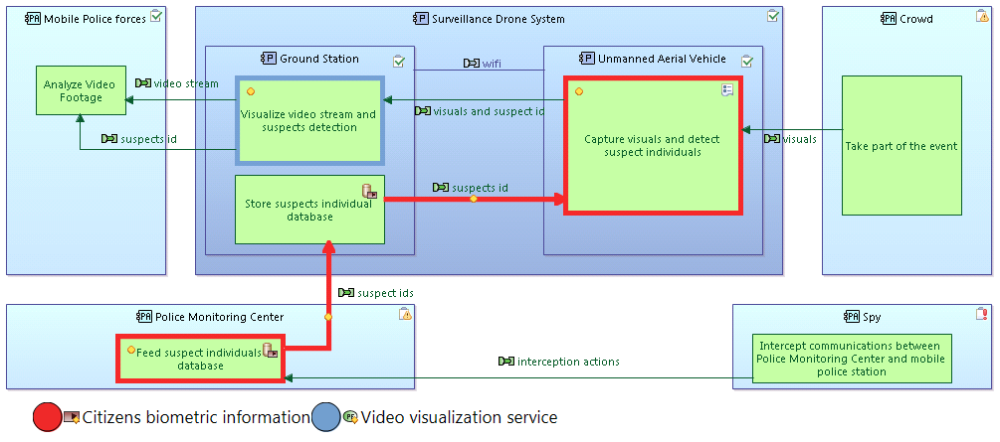

| Threat |
|
Insert a new Threat into the diagram. |
| Functional Primary Asset |
|
Insert a new Functional Primary asset into the diagram. |
| Information Primary Asset |
|
Insert a new InformationPrimaryAsset into the diagram. |
| Actor |
|
Insert a new Actor into the diagram. |
| Involves |
|
Creates an involvement relationship from a Threat element to an Actor element. |
| Applicable to |
|
Creates an involvement relationship from a Threat element to a Functional or Information Primary Asset. |
| Actors |
|
Shows/Hides selected existing Actors on the diagram. |
| Threats |
|
Shows/Hides selected existing Threats on the diagram. |
| Functional Primary Assets |
|
Shows/Hides selected existing Functional Primary Assets on the diagram. |
| Information Primary Assets |
|
Shows/Hides selected existing Information Primary Assets on the diagram. |

Threat diagrams have an optional layer named "Threat Level Decorations". When this layer is enabled, each Threat's level value is displayed in parenthesis next to the Threat element:

Most of the tools in a Cybersecurity PAB diagram are documented in the Capella documentation for Physical Architecture Blank. Refer to this documentation for tools that are not documented here.
| Primary Assets |
|
Shows/Hides existing Functional or Information Primary Assets on the diagram. When an asset is shown on a diagram, its color is chosen randomly from a set of predefined colors. Node elements related to the asset will then receive an emphasized border that matches the color of the asset element. Related edges will change the color to the color of the asset element. |

The Trust Boundaries Layer for Cybersecurity PAB diagrams will change the diagrams appearence: Trusted components and actors will change their background color to white, untrusted components and actors will change their color to red. Communication edges between Trusted and Untrusted elements, so called Trust Boundaries, will be decorated with a small flame icon:

Additional layers are provided to focus on Confidentiality, Integrity, Availability and Traceability needs for model elements. When one of these layers is active, elements with a higher respective security needs value are emphasized over elements with a lower security needs value:

The Cybersecurity Decorations Layer adds the following decorations to existing diagram elements:
 Data Storage Data Storage
|
Indicates that the function represents a data storage functionality |
 Trusted Actor Trusted Actor
|
Ability to be relied on as honest or truthful |
 Untrusted Actor Untrusted Actor
|
Disability to be relied on as honest or truthful |
 Remanent Data Remanent Data
|
Indicates that the function manipulates data in such a way that data (or parts of it) remains even after attempts have been made to remove or erase it. |
 ThreatSource ThreatSource
|
Someone or something that could affect the product (ref: 87210649-DDQ-GRP-EN - Cyber Security For Architects Guide) |